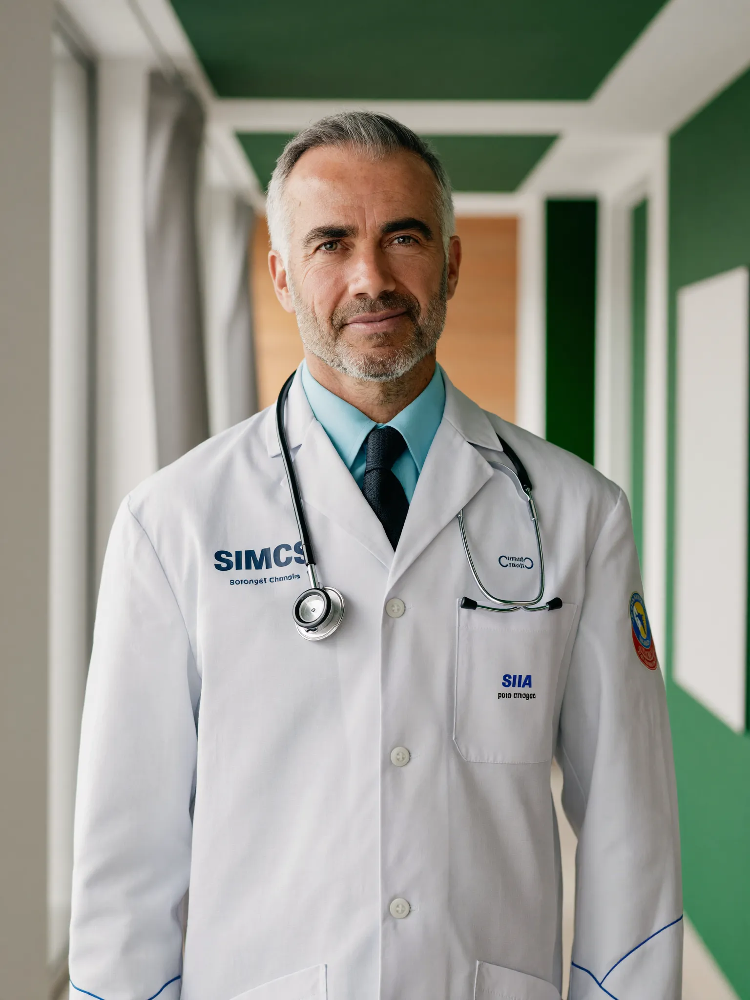

Görüntüleme
Dijital röntgen, ultrasonografi, renkli doppler ve mamografi tetkikleri aynı merkez içinde yapılır; görüntüler radyoloji uzmanı tarafından raporlanır ve raporların çoğu aynı gün teslim edilir.
Görüntüleme tetkikleriniz tek çatı altında
Görüntüleme birimimiz; muayene sırasında istenen röntgen, ultrasonografi, renkli doppler ve mamografi tetkiklerini merkez içinde gerçekleştirir. Böylece hekiminizin istediği tetkik için başka bir kuruma gitmenize gerek kalmaz; sonuçlar aynı sistem üzerinden hekiminize ulaşır.
Çekimler deneyimli tekniker ve radyoloji uzmanı eşliğinde yapılır; cihazlarımız düzenli kalibrasyon ve kalite kontrol süreçlerinden geçer. Görüntüler radyoloji uzmanı tarafından değerlendirilir, raporlar e-Nabız sistemine işlenir. Hangi tetkikin gerekli olduğuna hekiminiz karar verir; bu sayfadaki bilgiler genel bilgilendirme amaçlıdır.

Bu birimde yapılan tetkikler
Aşağıdaki tetkikler birimimizde gerçekleştirilir. Liste bilgilendirme amaçlıdır; hangi tetkikin gerekli olduğuna hekiminiz karar verir.
- Akciğer grafisi (röntgen)
- Kemik ve eklem grafileri
- Tüm batın ultrasonografisi
- Üriner sistem ultrasonografisi
- Tiroid ve boyun ultrasonografisi
- Meme ultrasonografisi ve mamografi
- Bacak toplardamar (venöz) doppler
- Boyun damarları (karotis) doppler
Görüntüleme yöntemlerimiz
Tetkike özel hazırlık gerekip gerekmediği randevu sırasında size bildirilir.
Dijital Röntgen
Akciğer, kemik ve eklem grafileri düşük doz dijital sistemle çekilir. Hazırlık gerektirmez; çekim birkaç dakika sürer ve görüntüler anında sisteme aktarılır.
Ultrasonografi (USG)
Karın içi organlar, tiroid, meme ve yüzeyel dokular ses dalgalarıyla incelenir. Radyasyon içermez; tetkike göre açlık veya idrara sıkışık olma istenebilir.
Renkli Doppler USG
Damarlardaki kan akımı renkli olarak görüntülenir. Bacak damarları, boyun damarları ve organ kanlanmasının değerlendirilmesinde kullanılır.
Mamografi
Meme dokusunun düşük doz röntgenle görüntülenmesidir; meme sağlığı taramasında ve şikâyetlerin değerlendirilmesinde kullanılır. Randevulu çalışır.
Tiroid ve Yüzeyel Doku USG
Tiroid bezi, boyun lenf bezleri ve cilt altı dokular yüksek çözünürlüklü problarla incelenir. Hazırlık gerektirmez.
Radyolog Raporlaması
Tüm görüntüler radyoloji uzmanı tarafından değerlendirilir ve raporlanır; raporların çoğu aynı gün teslim edilir, sonuçlar e-Nabız'a işlenir.
Nasıl işler?
Röntgen çekimleri için randevu gerekmez; USG, doppler ve mamografi randevulu çalışır.
Randevu ve hazırlık
Telefonla veya online randevunuzu oluşturun. Tetkikinize özel hazırlık (açlık, su içme, ilaç durumu) randevu sırasında size ayrıntılı olarak iletilir.
Çekim
Çekimler deneyimli tekniker ve radyoloji uzmanı eşliğinde yapılır; çoğu tetkik 10-20 dakika sürer. Gebelik şüphesi varsa çekim öncesinde mutlaka bildirin.
Raporlama ve teslim
Görüntüler radyoloji uzmanınca değerlendirilir; raporların çoğu aynı gün hazırlanır, e-Nabız'a işlenir ve sizi yönlendiren hekiminizle birlikte değerlendirilir.
Görüntüleme hakkında merak edilenler
Aşağıdaki yanıtlar genel bilgilendirme amaçlıdır ve hekim değerlendirmesinin yerine geçmez.
Ultrason (USG) öncesi nasıl hazırlanmalıyım?
Hazırlık tetkike göre değişir: tüm batın USG için genellikle 6-8 saatlik açlık, üriner sistem USG için ise su içip idrara sıkışık gelmeniz istenir. Tiroid ve yüzeyel doku ultrasonları hazırlık gerektirmez. Randevu alırken tetkikinize özel hazırlık bilgisi size iletilir.
Röntgen çekiminde radyasyona maruz kalır mıyım, gebelikte çekilebilir mi?
Dijital röntgen cihazları düşük doz ile çalışır ve çekimler koruyucu önlemlerle yapılır. Yine de gebelik veya gebelik şüphesi varsa çekim öncesinde ekibimize mutlaka bildirmeniz gerekir; bu durumda tetkikin gerekliliği hekiminizce yeniden değerlendirilir. Ultrason radyasyon içermez.
Mamografi için randevu ve zamanlama nasıl olmalı?
Mamografi randevulu çalışır. Menopoz öncesi dönemde, göğüslerin daha hassas olduğu günlerden kaçınmak için çekimin adet bitimini izleyen hafta içinde planlanması önerilir. Çekim günü pudra, deodorant ve krem kullanmamanız istenir; önceki mamografi görüntülerinizi getirmeniz karşılaştırma için önemlidir.
Sonuç ve raporumu ne zaman alabilirim?
Görüntüler çekim sonrasında radyoloji uzmanı tarafından değerlendirilir; raporların çoğu aynı gün içinde hazırlanır. Sonuçlarınız e-Nabız sistemine işlenir; görüntülerinizi dijital ortamda da alabilirsiniz. Raporun yorumlanması için sizi yönlendiren hekiminize başvurmanız önerilir.
Görüntüleme randevunuzu oluşturun
USG, doppler ve mamografi için online randevu alabilir, hazırlık bilgileri ve uygun saatler için telefonla hasta danışmanlarımızdan destek alabilirsiniz.